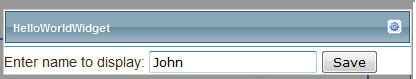

If you have comments /queries about this documentation, email them to:
1. Assumptions
2. Introduction
3. Project Setup
4. Simple widget
5. Widget with settings
6. Widget Registration
7. Deploying a widget
This document is meant for developers and assumes you have read Templar overview document.
It also assumes you have basic knowledge of ASP.NET and can write a simple user control. If not that please familiarize yourself with that first before proceeding.
Widgets as you know are the building blocks of Templar. Widgets are what enable users to create rich interfaces with minimum effort. A well designed widget will enable you to reuse it across different scenarios. Any application functionality can be implemented as a widget or a set of widgets.
In this document we cover full widget development life-cycle from
Setting up the project for development
Creating a simple widget
Creating a widget with settings
Registering and using the widget
Deploying your widget
Templar is built on top of ASP.NET 4.5. The primary language used in C# however you can use any managed language to write your widget code.
To create widgets for Templar you need VS2012 and a Templar development project setup.
Just unzip the setup project and you will have the structure ready as shown below.
Things to note here
1. Portal – it is the main Templar application project
2. Sample Widgets – this is the project added for new widget creation. It can be a class library or web application project as per your choice. You can create multiple widgets in this project however it is advisable to group widgets into separate projects based on functionality.
3. Widgets folder – your widget project should have a folder named Widgets inside which you should create your widgets. As a best practice you should create a folder for each widget inside the root Widgets folder.
4. Templar contract – to access Templar interfaces add a reference to "Tavisca.Templar.Contract" in your project. Also add a reference of your project to the main Portal project to avoid manually copying any dependencies.
5. Post build task – since your widget markup should be finally copied to the Portal project’s Widget folder so as a convenience you can setup a post build task for copying your Widgets folder to the Portal’s root folder.
Post build event sample command is
xcopy "$(ProjectDir)Widgets" "$(SolutionDir)Portal\Widgets" /r /i /d /y /s
Let’s create a simple "Hello World" widget which displays “Hello world” on the page where it is added.
To start with we will add a folder called HelloWorldWidget inside the Widgets folder of our project and then add a user control. Giving it the name HelloWorldWidget.ascx.
To make it a widget, this user control needs to implement Templar’s IWidget interface.
IWidget interface defines the methods as shown below
Init – When a widget is initialized by Templar this is the first method which is called.
This method provides an IWidgetHost object to the widget, which is the key for all widget interactions with Templar and in the context the site, page and other widgets.
The instance of this IWidgetHost object should be stored locally for later use.
ShowSettings- This method is called when a user clicks on settings icon of the widget in Templar designer.Once called this method should show all setting options which you as a widget developer want the user to configure for each instance of your widget.
HideSettings- This method is called when a user clicks on settings icon of a widget with open settings in Templar designer. Once called you should close your settings display.
For this widget we will keep the interface implementation empty. We will come back to it later.
Add a label to the HelloWorldWidget.ascx page and write "Hello world"
That’s all compile and the widget is ready.
Markup
Code
Next you register this widget (Refer widget registration section) and use it in your pages.
The simple "Hello world" widget doesn’t do much except display the static “Hello world” text.
To really create reusable widgets you need to allow your users to customize your widget.
Let’s say now we want to give users the ability to configure the name "world" to one of their choosing.
To achieve we need to drill a bit deeper into IWidgetHost which we ignored earlier.
As we know IWidgetHost is the key for all widget interactions with the system. It also proved a basic data store for widget and we will use this to store our settings.
IWidgetHost interface defines the methods as shown below
There are a lot of capabilities provided by IWidgetHost. Here we are only interested in the SaveState and GetState methods. One takes a string and saves it and the other returns the saved string. This state is saved for each widget instance so if you have added the same widget on the page three times then each would have different state for their use.
What we will do is create a settings panel in the widget and give user the option to set his display message there.
We will hook up this section with the yet unused HideSettings and ShowSettings methods of IWidget interface we implemented earlier.
Once the user adds the message we will save it in state. On initialize we will check if there is some state saved, if there is than we will use that for name else we will use the default "world".
After changes the widget settings section looks like
Few things to note here
We have now added two panels for grouping settings and main widget code.
By default the settings panel is set to visible="false” so it is not rendered in normal flow
We have hooked the settings save function to btnSave_click where we save the settings.
The code for the widget now looks like!
Few things to note her
We have cached the host using a property named Host
Post saving the state we have called Host.HideSettings in btnSave_Click. This will close the settings panel and displayed the updated widget panel
We have added ASP.NET’s Page_PreRender method to render latest widget data
That’s all compile and register this widget (Refer widget registration section)
Now let’s use this on a page
Create a page and add the widget to the page from top widget panel
Click on widget settings icon as shown

A widget has to be register before it can be used.
Follow the steps below for registering a new widget.
Login to Templar
Go to Admin tab click widgets tab
Click 'Add new widget' link on top
Enter details e.g.
Widget name: HelloWorldWidget
Widget url: HelloWorldWidget\HelloWorldWidget.ascx (This is the very important, it is the relative url for the widget from widgets folder)
Description, icon, state are optional
If all went well you should be able to see the widget by clicking the preview icon
In case of any issues with the widget, preview will throw an error. You can go to Reports>Unhandled Exception report and check for errors. Fix them and try again and you should be able to see the preview.
Now if you create a new page. Then after clicking the designer’s widget tab you should be able to see your new widget. You can use it be dragging and dropping it to your page.
Once you have tested your widget locally you need to deploy it to the Templar environment where users can start using it. A widget as we have already seen is an ASP.NET user control, for it to run we need to
Copy the markup of the control .ascx file with all associated scripts or media files and to a folder under Widgets of the main Templar deployment
Next we need to copy the widget’s dll and any dependent dlls to main Templar installation’s Bin folder
(In case of multi machine deployment you need to do this on each server individually).
Once copied, register the widget on this environment and then you can start using the widget. l If you used a Web Application project for creating the widget than you can simply publish the project to get the required filed for deployment.